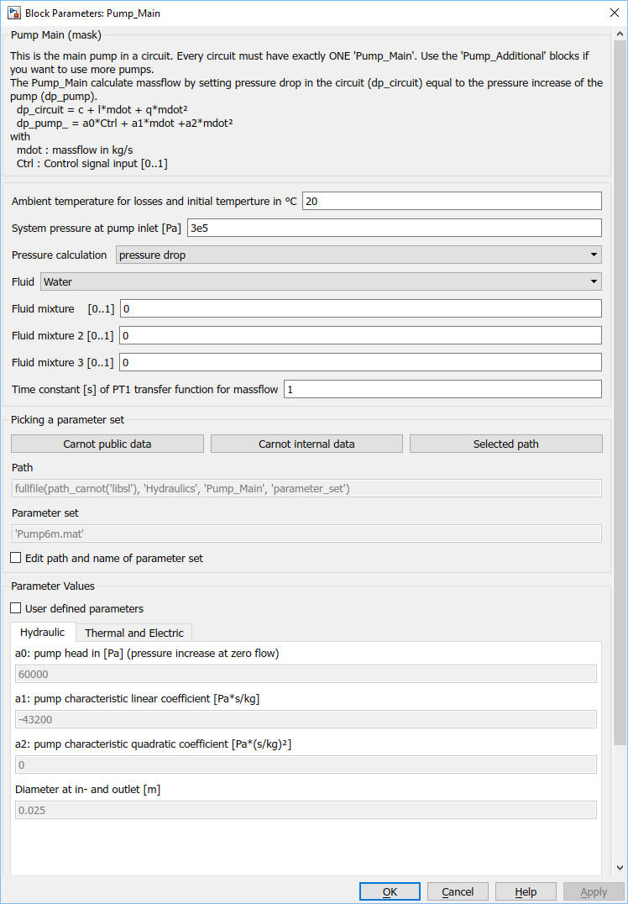
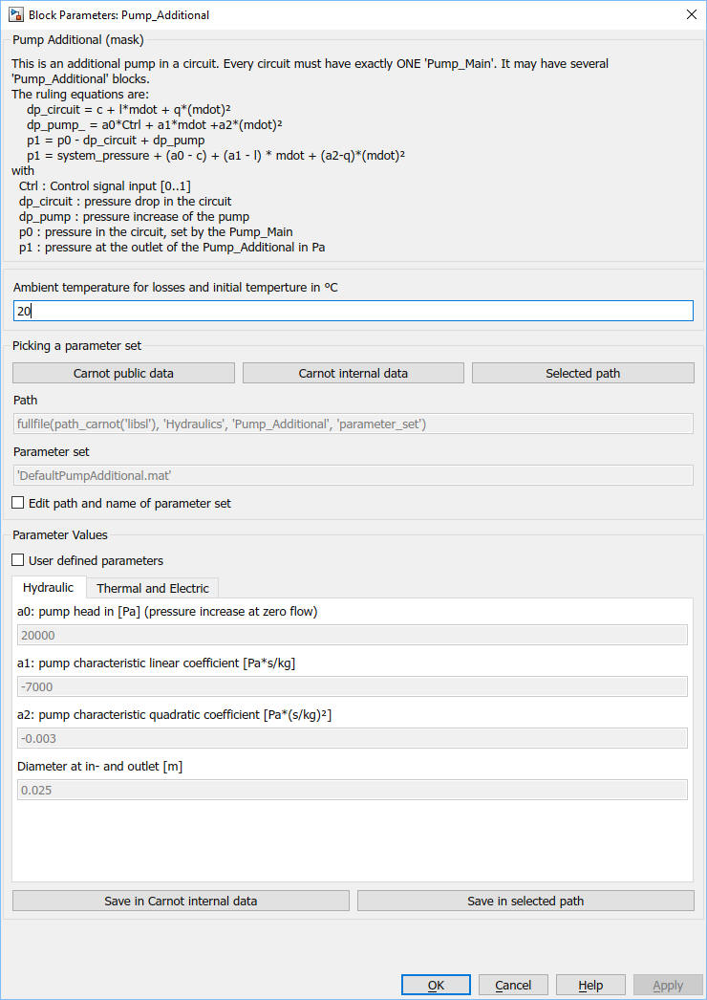

Pump_Main and Pump_Additional
Pump_Main and Pump_Additional Path: CARNOT/Hydraulics
Pump_Main and Pump_Additional
Path: CARNOT/Hydraulics
Purpose
Pump model which uses user defined pump characteristics.
Description
Pump_Main and Pump_Additional are the pump models calculating the massflow based
on the pressure drop equation. Every circuit must have exactly ONE 'Pump_Main'
but it may have several 'Pump_Additional' blocks in series or in parallel. See
examples 'Example_Hydraulic*.slx in the folder carnot\tutorial\examples (or use
the 'double click to load examples' button in the Carnot library).
The control signal Ctrl is (more or less) linear to the rotation speed n.It has a quadratic influence on the pump head since h1 / h2 = (n1 / n2)² and a linear influence on the linear coefficient since V1 / V2 = n1 / n2. The quadratic coefficient of the pump is not influenced by the control singal.
The Pump_Main calculates massflow by setting pressure drop in the circuit (dp_circuit) equal to the pressure increase of the pump (dp_pump) and solving the equation analytically.
dp_circuit = c + l*mdot + q*mdot²
dp_pump_ = a0*Ctrl² + a1*Ctrl*mdot +a2*mdot²
with
mdot : massflow in kg/s
Ctrl : Control signal input [0..1]
a0 : constant pump coefficient in Pa
a1 : linear pump coefficient in Pa/(kg/s)
a0 : quadratic pump coefficient in Pa/(kg/s)²
c : constant coefficient in Pa (DPConstant in the THB)
l : constant coefficient in Pa*s/kg (DPLinear in the THB)
q : quadratic coefficient in Pa*(s/kg)² (DPQuadratic in the THB)
The Pump_Additional calculates no massflow but the pump characteric coefficients are substracted from the pressure drop of the circuit.
dp_total = dp_circuit + dp_pump_additional
dp_total = (a0*Ctrl² - c) + (a1*Ctrl - l) * mdot + (a2-q)*mdot²
The electric power consumption of the pump is given by a quadradic polynom:
Pel = e0 + e1*mdot + e2*mdot²
You may specify your own
pump specifications by
activating the 'user parameters' checkbox.
Remark
Be aware that different pumps react differently on the control signal
input. Typically a linear signal (e.g. 0-10 V) is the input. But the reaction
can be:
0 V is interpreted as pump off, 2 V is the minimum speed and 10 V
the maximum speed
0 V is interpreted as minimum speed and 10 V the maximum speed
0 V is interpreted as maximum speed and 10 V is minumum speed
When simulating one
specific pump you should refer to the data sheet how the specific model is
reacting.
Parameters and Dialog Box


Different parameter sets are available. See description for details.
Characteristics
Direct Feedthrough No
(Pump_Main), Yes
(Pump_Additional)
Sample
time
Inherited
from driving block
Vectorized
No